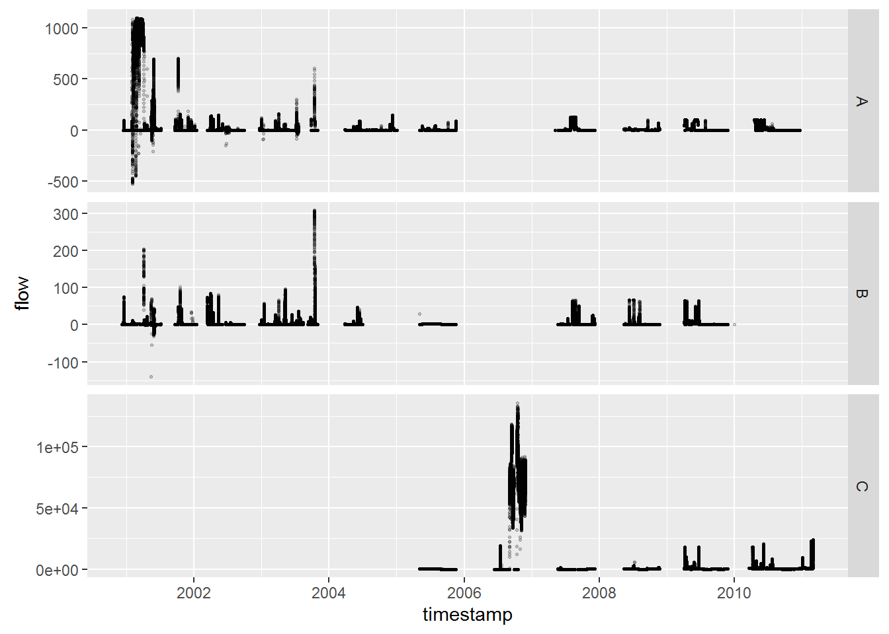
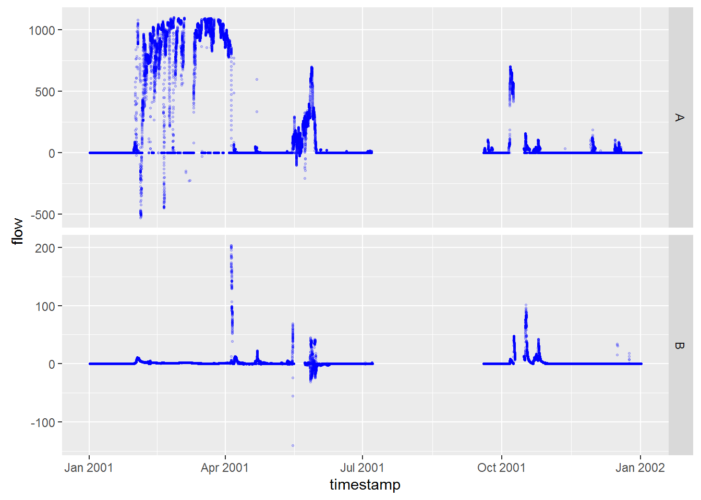

This is an R Markdown document. Markdown is a simple formatting syntax for authoring HTML, PDF, and MS Word documents. For more details on using R Markdown see http://rmarkdown.rstudio.com.
When you click the Knit button a document will be generated that includes both content as well as the output of any embedded R code chunks within the document. You can embed an R code chunk like this:
FULTON %>%
group_by(location) %>%
summarize(MIN = min(flow, na.rm = T), AVE = mean(flow, na.rm = T), MAX = max(flow, na.rm = T)) %>%
pander()| location | MIN | AVE | MAX |
|---|---|---|---|
| A | -528.0739 | 25.00005 | 1098.9060 |
| B | -140.0945 | 2.17744 | 308.0984 |
| C | 0.0000 | 4213.61769 | 135681.0576 |
You can also embed plots, for example:

Close-up for one year:
